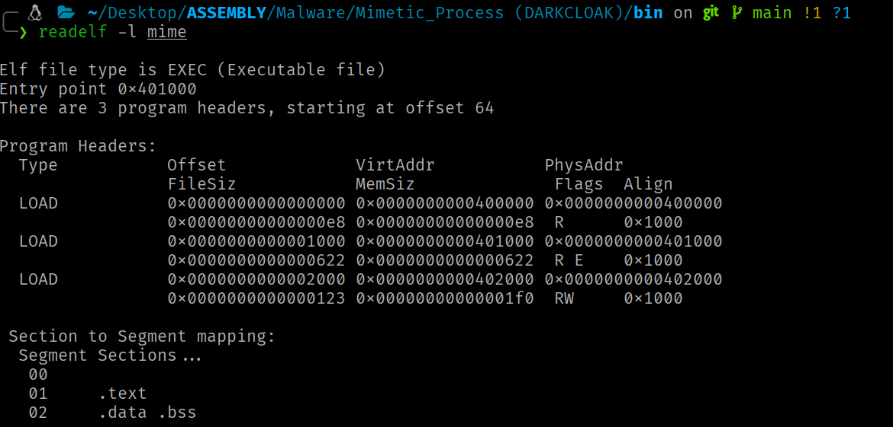
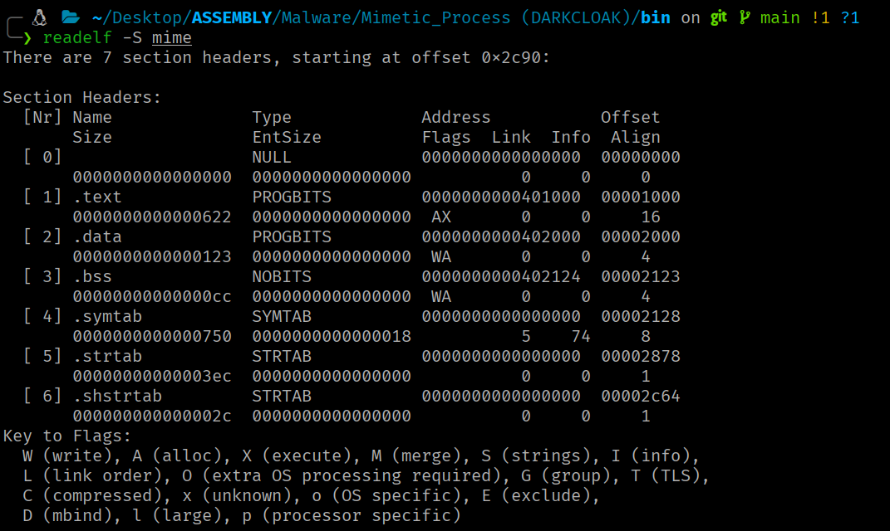

ELF Internals
TODO_INTRO
Contexto
Este artículo cubre la estructura interna del formato binario nativo de Linux. Comprender cómo el kernel interpreta y carga un ELF es un requisito previo para cualquier técnica ofensiva que manipule binarios, inyecte código o implemente loaders personalizados.
Introducción¶
El Executable and Linkable Format (ELF) es el formato binario nativo del ecosistema Linux. Todo binario ejecutable, biblioteca compartida y objeto reubicable en un sistema Linux es un fichero ELF.
Dualidad segment/section¶
La arquitectura ELF presenta una dualidad fundamental, el mismo archivo puede describirse simultáneamente mediante dos vistas complementarias:
- La vista de ejecución organiza el contenido en segments (descritos por la Program Header Table). Los segments representan cómo el kernel mapea el binario en memoria virtual cuando se ejecuta el programa.
-
La vista de enlazado organiza el contenido en sections (descritas por la Section Header Table). Las sections son unidades lógicas con semántica específica utilizadas por el linker durante el proceso de construcción del binario ELF y por herramientas de análisis estático.
La Section Header Table es prescindible en tiempo de ejecución.
Ambas vistas, son formas de interpretar el mismo ELF en distintas fases del ciclo de vida del programa (construcción (linking) y ejecución (loading)).
Layout físico del archivo¶
Un archivo ELF de 64 bits presenta el siguiente layout físico canónico:
Offset 0x00: ELF Header (64 bytes)
Offset e_phoff: Program Header Table (e_phnum × 56 bytes)
[Contenido de los segments: datos, código, etc.]
Offset e_shoff: Section Header Table (e_shnum × 64 bytes)
El ELF Header comienza invariablemente en el offset 0 del archivo. La Program Header Table suele ubicarse inmediatamente después del header (offset 0x40 en binarios de 64 bits), aunque la especificación no impone esta restricción. La Section Header Table se sitúa convencionalmente al final del archivo, pero igualmente puede residir en cualquier offset válido. Los contenidos reales (código, datos, tablas de símbolos) ocupan las regiones intermedias, referenciados mediante offsets desde las tablas de cabeceras.
ELF Header¶
El ELF Header es la primera estructura de todo archivo ELF y actúa como punto de entrada para la interpretación del binario completo. Ocupa los primeros 64 bytes del archivo en la variante de 64 bits y proporciona al kernel, al linker y a las herramientas de análisis toda la información necesaria para localizar y decodificar el resto del contenido.
Estructura de Elf64_Ehdr¶
typedef struct elf64_hdr {
unsigned char e_ident[EI_NIDENT]; /* ELF "magic number" */
Elf64_Half e_type; /* Tipo de archivo */
Elf64_Half e_machine; /* Arquitectura objetivo */
Elf64_Word e_version; /* Versión del formato ELF */
Elf64_Addr e_entry; /* Entry point virtual address */
Elf64_Off e_phoff; /* Program header table file offset */
Elf64_Off e_shoff; /* Section header table file offset */
Elf64_Word e_flags; /* Architecture-specific flags */
Elf64_Half e_ehsize; /* Tamaño de este header en bytes */
Elf64_Half e_phentsize; /* Tamaño de cada program header entry */
Elf64_Half e_phnum; /* Número de program header entries */
Elf64_Half e_shentsize; /* Tamaño de cada section header entry */
Elf64_Half e_shnum; /* Número de section header entries */
Elf64_Half e_shstrndx; /* Índice de la sección .shstrtab */
} Elf64_Ehdr;
Los tipos de datos utilizados en la variante de 64 bits son: Elf64_Half = __u16 (2 bytes), Elf64_Word = __u32 (4 bytes), Elf64_Addr = __u64 (8 bytes), Elf64_Off = __u64 (8 bytes).
Para consultar los datos de la cabecera del fichero ELF:

Campos de la Estructura Relevantes¶
-
e_identLos primeros 16 bytes codifican la identificación y las propiedades fundamentales del binario:
Índice Constante Valor x86-64 Significado 0 EI_MAG00x7fPrimer byte del magic number 1 EI_MAG10x45 ('E')Segundo byte del magic number 2 EI_MAG20x4c ('L')Tercer byte del magic number 3 EI_MAG30x46 ('F')Cuarto byte del magic number 4 EI_CLASS2 (ELFCLASS64)Clase: 64 bits 5 EI_DATA1 (ELFDATA2LSB)Endianness: little-endian 6 EI_VERSION1 (EV_CURRENT)Versión del formato 7 EI_OSABI0 (ELFOSABI_NONE)ABI del SO 8 EI_PAD0Padding (bytes 8–15 a cero) El kernel realiza las siguientes validaciones con los datos del ELF Header: magic bytes =
\177ELF(0x7f 0x45 0x4c 0x46),e_type∈ {ET_EXEC,ET_DYN},e_machinecompatible con la arquitectura (EM_X86_64= 62 en x86-64) ye_phentsize= 56. Si cualquier comprobación falla, retorna-ENOEXEC. -
e_typeNaturaleza del archivo.
ET_REL(1) = objeto reubicable (.o),ET_EXEC(2) = ejecutable con direcciones absolutas,ET_DYN(3) = shared object / PIE executable,ET_CORE(4) = core dump. -
e_machineArquitectura. Para x86-64:
62(EM_X86_64). -
e_entryDirección virtual del punto de entrada (
_start). En binarios no-PIE (ET_EXEC), es una dirección absoluta fija. En binarios PIE (ET_DYN), es un offset relativo a la base de carga, que el kernel suma a la dirección base establecida por ASLR. -
e_phoffye_shoffOffsets en bytes de la PHT y la SHT dentro del archivo.
-
e_phentsizeTamaño de cada entrada de la PHT (56 bytes para ELF64).
-
e_shentsizeTamaño de cada entrada de la SHT (64 bytes para ELF64).
-
e_phnumNúmero de entradas en la PHT.
-
e_shnumNúmero de secciones en la SHT.
-
e_shstrndxÍndice de la sección
.shstrtab(contiene los nombres de las secciones como cadenas terminadas en\0). -
e_flagsFlags específicas de la arquitectura. En x86-64, es siempre
0.
Program Headers¶
Habiéndose establecido el ELF Header como punto de entrada interpretativo, la siguiente estructura crítica para la carga en memoria es la Program Header Table (PHT). Esta tabla describe los segments del binario, bloques contiguos de datos que el kernel mapea directamente al espacio de direcciones virtual del proceso.
Estructura de Elf64_Phdr¶
Cada entrada de la PHT tiene 56 bytes:
typedef struct elf64_phdr {
Elf64_Word p_type; /* Tipo de segmento */
Elf64_Word p_flags; /* Flags de permisos (RWX) */
Elf64_Off p_offset; /* Offset del segmento en el archivo */
Elf64_Addr p_vaddr; /* Dirección virtual de carga */
Elf64_Addr p_paddr; /* Dirección física (sin uso en Linux) */
Elf64_Xword p_filesz; /* Tamaño del segmento en el archivo */
Elf64_Xword p_memsz; /* Tamaño del segmento en memoria */
Elf64_Xword p_align; /* Alineamiento del segmento */
} Elf64_Phdr;
La entrada N se localiza en: e_phoff + (N × 56). En memoria (via auxv): AT_PHDR + (N × AT_PHENT).
Para consultar los datos de la PHT del archivo ELF:

Campos de la Estructura Relevantes¶
-
Tipos de segmentos (
p_type)-
PT_LOADSegmento cargable. Cada
PT_LOADdefine una región que el kernel mapea al espacio de direcciones virtuales del proceso mediantemmap. Un binario típico contiene dos o tres segmentsPT_LOAD: uno para código (RX), uno para datos (RW) y opcionalmente uno para constantes de solo lectura (R). -
PT_DYNAMICApunta a la información necesaria para el enlazado dinámico. Normalmente contiene la sección
.dynamic, formada por un array de estructurasElf64_Dyn, que actúa como la tabla principal utilizada por el dynamic linker (generalmenteld-linux.so). -
PT_INTERPRuta del intérprete ELF (dynamic linker). El kernel lee esta ruta y carga al intérprete como un segundo binario ELF antes de transferir el control. Un ejecutable estáticamente enlazado carece de este segmento.
-
PT_PHDRIndica dónde se encuentra cargada en memoria la propia PHT. Esto permite al intérprete ELF localizar directamente la tabla de segmentos durante la carga dinámica del ejecutable, sin la necesidad de volver a leer el ELF Header desde el archivo en disco.
-
PT_NOTEInformación auxiliar (notas).
-
PT_TLSPlantilla para Thread-Local Storage. Define el bloque de datos que cada thread recibe como copia privada.
-
-
Permisos (
p_flags)El kernel traduce estas flags a protecciones de página (granularidad mínima):
Combinación ELF ( p_flags)Protección de páginas Uso Secciones relevantes PF_R|PF_XPROT_READ|PROT_EXECCódigo ejecutable .textPF_R|PF_WPROT_READ|PROT_WRITEDatos modificables .datay.bssPF_RPROT_READDatos de solo lectura .rodata
Alineamiento y cálculo de rangos¶
El rango real de memoria de un segmento se redondea al siguiente múltiplo de p_align:
Las syscalls mmap, munmap, mremap y mprotect operan con la granularidad de una página. Cualquier operación sobre los mappings de un segmento debe usar rangos alineados.
Carga de un binario ELF por el kernel¶
Cuando un proceso invoca a la syscall execve, el kernel no sabe de antemano qué formato tiene el binario a ejecutar. Linux soporta múltiples formatos binarios, cada uno vinculado a un handler en una lista enlazada. El kernel itera esa lista y pasa el archivo a cada handler hasta que uno lo acepta.
Para ELF, el handler es load_elf_binary. La función comienza validando el ELF Header (magic bytes, e_type, e_machine, e_phentsize). Si la validación falla, retorna -ENOEXEC y el kernel continúa probando el siguiente handler de la lista.
Superada la validación, el kernel itera la PHT buscando dos tipos de segmento:
-
Detección de
PT_INTERP
Si la PHT contiene un segmentoPT_INTERP, el kernel lee la ruta del intérprete dinámico y lo mapea en el nuevo espacio de direcciones, junto con los segmentos del binario principal. Un binario estáticamente enlazado no tienePT_INTERP, de modo que el kernel transfiere el control directamente a su entry point.execveno crea un proceso nuevo, sino que reemplaza la imagen del proceso que la invoca. El PID es el mismo. El kernel descarta el espacio de direcciones del proceso invocador y construye uno nuevo donde mapea los segmentos del binario a ejecutar. -
Mapeado de segmentos
PT_LOAD
Cada segmentoPT_LOADen la PHT describe un rango de bytes del fichero ELF (p_offset,p_filesz), la dirección en memoria virtual donde deben colocarse esos bytes (p_vaddr) y los permisos de esa zona (p_flags). Si el segmento necesita más memoria de la que ocupa en el fichero (p_memsz > p_filesz), el kernel extiende la zona con memoria inicializada a cero, esa diferencia corresponde a la región.bss, las variables globales sin valor inicial.Cada
PT_LOADgenera una o más VMAs en elmm_structdel proceso.El cálculo de la dirección depende del tipo de binario:
- En
ET_EXEC(no-PIE):p_vaddres una dirección virtual absoluta. El kernel mapea el segmento exactamente en esa dirección. Cada ejecución produce el mismo layout de memoria. - En
ET_DYN(PIE): el kernel selecciona una dirección base aleatoria (debido al ASLR) y sumap_vaddrcomo offset. Cada ejecución produce un layout diferente. La aleatorización dificulta ataques que dependen de conocer las direcciones de código o datos.
- En
Transferencia de control¶
Si el binario tiene intérprete, el kernel transfiere el control al entry point del intérprete, no al del programa. El intérprete procesa PT_DYNAMIC (resolviendo símbolos y aplicando reubicaciones), mapea las bibliotecas compartidas necesarias y finalmente salta al entry point real del programa (AT_ENTRY). Si no hay intérprete, el kernel salta directamente a e_entry.
Auxiliary Vector¶
Tras mapear los segmentos, el kernel construye la pila inicial del proceso, colocando en ella argc, los punteros de argv[], los punteros de envp[] y el auxiliary vector. El auxv es un array de pares clave-valor que transmite al espacio de usuario la información que el kernel conoce en el momento de la carga: la dirección de la PHT en memoria (AT_PHDR), el tamaño de cada entrada (AT_PHENT), el número de entradas (AT_PHNUM), el entry point del programa (AT_ENTRY) y la dirección base del intérprete (AT_BASE).
Estos valores permiten al intérprete dinámico (y al propio proceso) localizar las estructuras del binario sin acceder al fichero en disco, sin ellos, el intérprete no tendría forma de localizar la PHT del programa que debe procesar.
Layout de la pila inicial del proceso¶
[ parte alta ]
+----------------------------------+
| cadenas de argv, envp, filename | bytes terminados en NULL
+----------------------------------+
| padding de alineamiento (16 B) |
+----------------------------------+
| AT_NULL (0x00, 0x00) | 16 bytes NULL: terminador del auxv
| ... |
| AT_ENTRY (0x09, dirección) | 16 bytes por entrada
| AT_PHNUM (0x05, valor) |
| AT_PHENT (0x04, valor) |
| AT_PHDR (0x03, dirección) | inicio del auxv
+----------------------------------+
| NULL | 8 bytes NULL: terminador de envp[]
| envp[n-1] (puntero) |
| ... |
| envp[0] (puntero) |
+----------------------------------+
| NULL | 8 bytes NULL: terminador de argv[]
| argv[argc-1] (puntero) |
| ... |
| argv[0] (puntero) |
+----------------------------------+
| argc | 8 bytes (unsigned long)
+----------------------------------+
↑ RSP apunta aquí en el entry point
Cada entrada del auxv consta de dos unsigned long consecutivos (16 bytes):
typedef struct {
uint64_t a_type; /* AT_PHDR, AT_ENTRY, AT_RANDOM, etc. */
uint64_t a_val; /* valor asociado */
} Elf64_auxv_t;
El array termina cuando a_type == AT_NULL.
Entradas relevantes¶
a_type |
Constante | Contenido |
|---|---|---|
| 3 | AT_PHDR |
Dirección en memoria de la PHT del ejecutable |
| 4 | AT_PHENT |
Tamaño de cada Elf64_Phdr (56 bytes) |
| 5 | AT_PHNUM |
Número de program headers |
| 6 | AT_PAGESZ |
Tamaño de página del sistema (4096 bytes) |
| 7 | AT_BASE |
Dirección base de carga del intérprete dinámico |
| 9 | AT_ENTRY |
Entry point del ejecutable |
| 23 | AT_SECURE |
1 si el binario es setuid/setgid |
| 25 | AT_RANDOM |
Puntero a 16 bytes aleatorios (seed del stack canary) |
| 33 | AT_SYSINFO_EHDR |
Dirección del vDSO mapeado en el proceso |
El kernel genera exactamente una entrada por cada a_type, no hay duplicados. El auxv no es opcional, lo genera el kernel incondicionalmente para todo proceso ELF, estático o dinámico.
Introspección via auxv¶
Con los valores de AT_PHDR, AT_PHENT y AT_PHNUM, el proceso puede recorrer su propia PHT en memoria y localizar cualquier segmento.
En un binario PIE, las direcciones p_vaddr de cada segmento son offsets relativos a una base de carga que el kernel elige aleatoriamente (ASLR). El auxv no contiene esa base directamente, pero puede deducirse, ya que AT_PHDR indica dónde quedó la PHT en memoria tras la carga y p_offset del primer segmento indica a qué distancia del inicio del fichero se encontraba la PHT. Como el kernel mapea el fichero a partir de la base, la relación es base = AT_PHDR - p_offset. Con la base conocida, la dirección real de cualquier segmento se obtiene como base + p_vaddr. En binarios no-PIE (ET_EXEC), las direcciones p_vaddr son absolutas y este cálculo no es necesario.
Este mecanismo permite al código resolver el layout de memoria del proceso sin acceder a /proc/self/maps, evitando las syscalls openat/read/close que un monitor de seguridad podría detectar. Los datos del auxv ya están en el stack del proceso, por lo que acceder a ellos es una simple lectura de memoria, invisible para cualquier mecanismo de tracing a nivel de syscalls.
Section Headers¶
Mientras que los segmentos definen la vista de ejecución, las secciones proporcionan la vista de enlazado y análisis. La SHT no es necesaria para la ejecución, pero es indispensable para linkers, debuggers y analizadores estáticos.
Estructura de Elf64_Shdr¶
Cada entrada ocupa 64 bytes:
typedef struct elf64_shdr {
Elf64_Word sh_name; /* Índice en .shstrtab para el nombre */
Elf64_Word sh_type; /* Tipo de sección */
Elf64_Xword sh_flags; /* Atributos de la sección */
Elf64_Addr sh_addr; /* Dirección virtual en ejecución */
Elf64_Off sh_offset; /* Offset de la sección en el archivo */
Elf64_Xword sh_size; /* Tamaño de la sección en bytes */
Elf64_Word sh_link; /* Índice de sección relacionada */
Elf64_Word sh_info; /* Información adicional */
Elf64_Xword sh_addralign; /* Requisito de alineamiento */
Elf64_Xword sh_entsize; /* Tamaño de entrada (si es tabla) */
} Elf64_Shdr;
El campo sh_addr de la sección, cuando no es cero, indica la dirección virtual que la sección ocupa en memoria. Comparando con los rangos [p_vaddr, p_vaddr + p_memsz) de cada PT_LOAD (segmento), se determina qué secciones pertenecen a qué segmento.
Para consultar los datos de la SHT del archivo ELF:

Campos de la Estructura Relevantes¶
-
Tipos de sección (
sh_type)Valor Constante Descripción 0 SHT_NULLEntrada inactiva 1 SHT_PROGBITSContenido definido por el programa (código, datos) 2 SHT_SYMTABTabla de símbolos completa (linking) 3 SHT_STRTABTabla de cadenas 4 SHT_RELAEntradas de reubicación con addend explícito 6 SHT_DYNAMICInformación de enlazado dinámico 7 SHT_NOTEInformación auxiliar 8 SHT_NOBITSSección sin contenido en archivo ( .bss)9 SHT_RELEntradas de reubicación sin addend 11 SHT_DYNSYMTabla de símbolos dinámicos -
Flags de sección (
sh_flags)Valor Constante Significado 0x1SHF_WRITEEscribible en ejecución 0x2SHF_ALLOCOcupa memoria en ejecución 0x4SHF_EXECINSTRContiene instrucciones ejecutables 0x10SHF_MERGEPuede fusionarse para eliminar duplicados 0x20SHF_STRINGSContiene cadenas terminadas en \00x400SHF_TLSDatos thread-local Flags específicas del kernel:
SHF_RELA_LIVEPATCH(0x00100000) marca secciones de reubicación para live patching,SHF_RO_AFTER_INIT(0x00200000) marca secciones que se convierten en solo lectura tras la inicialización del kernel.
Secciones Fundamentales¶
Código ejecutable .text¶
Tipo: SHT_PROGBITS
- Atributos:
SHF_ALLOC | SHF_EXECINSTR -
Segmento:
PT_LOADcon permisosPF_R | PF_XContiene el código máquina del programa. El entry point (
e_entry) apunta normalmente al interior de.text.
Datos de solo lectura .rodata¶
Tipo: SHT_PROGBITS
- Atributos:
SHF_ALLOC -
Segmento:
PT_LOADcon permisosPF_RConstantes: cadenas de texto, tablas de lookup, constantes numéricas…
Datos inicializados .data¶
Tipo: SHT_PROGBITS
- Atributos:
SHF_ALLOC | SHF_WRITE -
Segmento:
PT_LOADcon permisosPF_R | PF_WVariables estáticas y globales inicializadas con valores no nulos. Los valores iniciales se copian desde el fichero al mapeado en memoria durante la carga.
Datos no inicializados .bss¶
Tipo: SHT_NOBITS
- Atributos:
SHF_ALLOC | SHF_WRITE -
Segmento: Ubicado en el
PT_LOADde datos (PF_R | PF_W)Variables globales y estáticas inicializadas a cero o sin inicializar.
Global Offset Table .got y .got.plt¶
Tipo: SHT_PROGBITS
- Atributos:
SHF_ALLOC | SHF_WRITE -
Segmento:
PT_LOADcon permisosPF_R | PF_WLa GOT es la estructura central del enlazado dinámico para el acceso a datos y funciones externas.
En x86-64 se divide en:
-
.gotEntradas para variables globales importadas y direcciones resueltas via eager binding.
-
.got.pltEntradas para funciones importadas, resueltas via lazy binding.
-
Procedure Linkage Table .plt, .plt.sec y .plt.got¶
Tipo: SHT_PROGBITS
- Atributos:
SHF_ALLOC | SHF_EXECINSTR -
Segmento:
PT_LOADcon permisosPF_R | PF_XSección de código con stubs trampolín para cada función importada:
-
.pltStubs de fallback para lazy binding (no llamados directamente por el código del programa).
-
.plt.secStubs que el código del programa llama directamente cuando invoca una función importada.
-
.plt.gotStubs para funciones importadas cuya dirección se almacena en una variable (function pointer) en lugar de llamarse directamente.
-
Tablas de Símbolos¶
Las tablas de símbolos asocian nombres con direcciones, tamaños y atributos.
Estructura de Elf64_Sym¶
Cada entrada ocupa 24 bytes:
typedef struct elf64_sym {
Elf64_Word st_name; /* Índice en la string table (4 bytes) */
unsigned char st_info; /* Tipo y binding del símbolo (1 byte) */
unsigned char st_other; /* Visibilidad (1 byte) */
Elf64_Half st_shndx; /* Índice de sección asociada (2 bytes) */
Elf64_Addr st_value; /* Valor del símbolo (dirección) (8 bytes) */
Elf64_Xword st_size; /* Tamaño del objeto asociado (8 bytes) */
} Elf64_Sym;
Un binario puede contener dos tablas distintas:
-
.symtab(tipoSHT_SYMTAB)Contiene todos los símbolos: funciones locales, variables estáticas, labels internos…
-
.dynsym(tipoSHT_DYNSYM)Contiene solo los símbolos necesarios para el enlazado dinámico: funciones y variables importadas/exportadas.
Agradecimientos¶
Gracias por llegar hasta aquí.
Si encuentras errores o quieres mejorar/ampliar el artículo, el contenido del blog está abierto a Pull Requests. Toda contribución es bienvenida.
¡Nos vemos en el próximo artículo! ;)